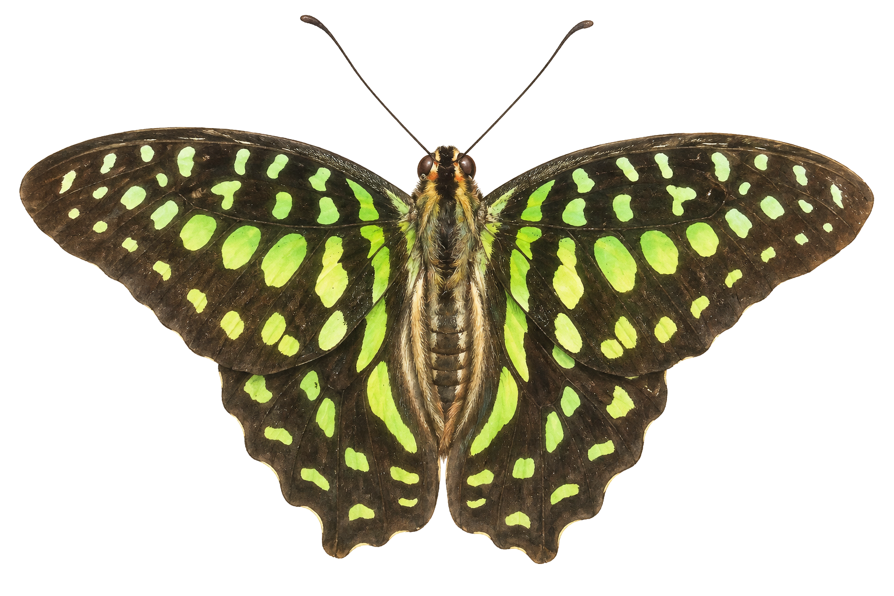

Papilionidae · 020 / 165
টেইলড জে
Graphium agamemnon

বৈশিষ্ট্য ও শনাক্তকরণ
কালো ডানায় অসংখ্য ছোট সবুজ দাগ ছড়ানো; Graphium sarpedon-এর মতো একটানা ফিতা হয় না।
স্ত্রী ও পুরুষের পার্থক্য
ডানার নকশা স্ত্রী-পুরুষে কাছাকাছি। পুরুষের পেছনের ডানার ভিতরের ধারে হলদে-ধূসর লোম থাকে—তাইওয়ানের তথ্য।
আকার
ডানা মেলা অবস্থায় প্রায় 60–70 mm; তাইওয়ানের তথ্য, এক সামনের ডানার দৈর্ঘ্য নয়।
ওকিনাওয়ার দ্বীপে রেকর্ড
স্থানীয় সূত্রে উল্লিখিত দ্বীপের রেকর্ড নিচের সূত্রে দেখুন। ইশিগাকি ও ইয়োনাগুনিতে রেকর্ড আছে। ইয়োনাগুনিতে ১৯৯৫ সালের প্রজনন ও ২০২০ সালের প্রাপ্তবয়স্ক পর্যবেক্ষণ নথিভুক্ত।
আবাসস্থল
দ্বীপের রেকর্ড আবাস-তালিকায় দেখুন। ওকিনাওয়ায় দীর্ঘমেয়াদি আবাস-পছন্দের বিস্তারিত নিশ্চিত হয়নি।
জীবনযাপন ও অতিরিক্ত তথ্য
সাময়িক প্রজনন থেকে পুরো প্রদেশে প্রতিষ্ঠা ধরে নেওয়া যায় না। সরকারি সংকলনে ইশিগাকির কিছু প্রজাপতি মানুষের ছাড়া হতে পারে বলে উল্লেখ আছে।
শূককীট ও খাদ্য উদ্ভিদ
জাপানে নথিভুক্ত খাদ্যগাছ তাইওয়ান ওগাতামা। বিদেশের দীর্ঘ খাদ্যতালিকা আলাদা বিষয়। ইয়োনাগুনিতে বন্য ডিম ও শূককীট দেখা গেছে।
তথ্যসূত্র ও সহায়ক পাঠ
- 沖縄県外来種データベース2024
ডেটায় উল্লেখিত সূত্র দেখার তারিখ: 2026-11-10 - 沖縄蝶類生態図鑑：コモンタイマイ
ডেটায় উল্লেখিত সূত্র দেখার তারিখ: 2026-11-10 - 台湾交通部：コモンタイマイ
ডেটায় উল্লেখিত সূত্র দেখার তারিখ: 2026-11-10
তথ্য সরবরাহকৃত ডেটার উপর ভিত্তি করে তৈরি (হালনাগাদ: ১০ নভেম্বর ২০২৬)। কোনো দ্বীপের রেকর্ড সেখানে বর্তমান স্থায়ী বসবাস বা সহজে দেখা পাওয়ার নিশ্চয়তা নয়। চিত্র নির্দেশক; শনাক্তকরণে বাস্তব নমুনা ও সূত্র মিলিয়ে দেখুন।